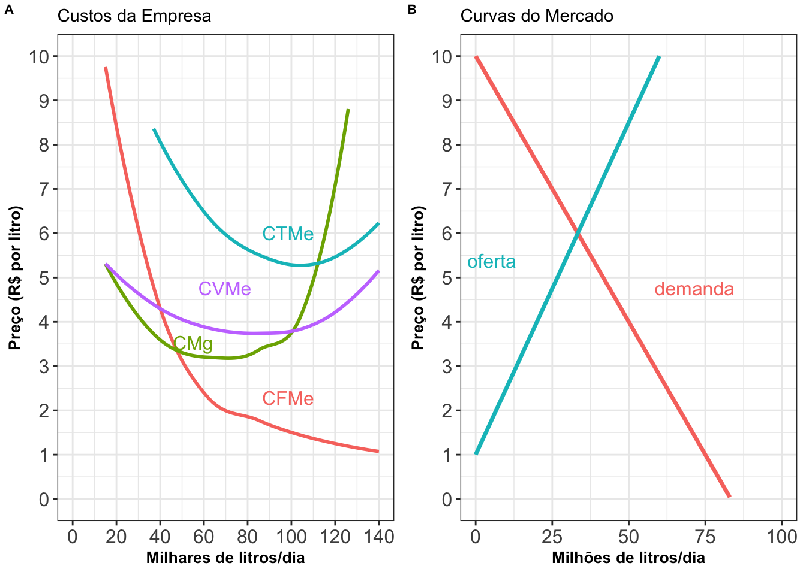

Foto de Krzysztof Hepner em Unsplash

Observação: pode reproduzir todos os dados do gráfico (Painel A), com
base na Tabela a seguir (onde: q em milhares de litros por
dia, L em milhares de trabalhadores e os custos
CV e CF em milhares de R$ por dia):
| L | q | CF | CV |
|---|---|---|---|
| 0 | 0 | 150 | 0 |
| 1 | 15 | 150 | 80 |
| 2 | 37 | 150 | 160 |
| 3 | 62 | 150 | 240 |
| 4 | 85 | 150 | 320 |
| 5 | 104 | 150 | 400 |
| 6 | 117 | 150 | 480 |
| 7 | 126 | 150 | 560 |
| 8 | 133 | 150 | 640 |
| 9 | 140 | 150 | 720 |
| 10 | 147 | 150 | 800 |
| 11 | 154 | 150 | 880 |
Foto de Hakan Nural em Unsplash
Assista ao vídeo a seguir: “Externalidades e Incentivos: A Economia da COVID”, e pause o vídeo às 3:47 para responder as perguntas abaixo.
Resuma em suas próprias palavras porque uma vacina contra gripe é um exemplo de uma externalidade positiva.
Identifique 1-2 outras atividades/bens/serviços com externalidades positivas.
Dada a definição de uma externalidade positiva, você pode prever a definição de uma externalidade negativa?
Quais são os benefícios de um indivíduo que recebe uma vacina contra a gripe?
O apresentador afirma que o número de pessoas que tomam vacinas contra a gripe é menor do que o número socialmente ideal de vacinas contra a gripe? Por quê?
Quais são as duas formas de aumentar o número de pessoas que recebem vacinas contra a gripe?
Explique como o desenvolvimento de vacinas contra o coronavírus também é um exemplo de uma externalidade positiva.
Considerando que, sem algum tipo de intervenção, o desenvolvimento de vacinas também seria subprovido, quais são algumas soluções possíveis para incentivar o desenvolvimento de vacinas?
Das soluções que você identificou, quais são as mais viáveis?
Agora assista o restante do vídeo: várias vacinas já foram desenvolvidas para o Covid-19, com eficácias comprovadamente altas e de acordo a muitos especialistas, numa velocidade nunca antes vista na história. Por que a velocidade para obter uma ou várias vacinas eficazes é tão importante quanto o fato delas serem eficazes?